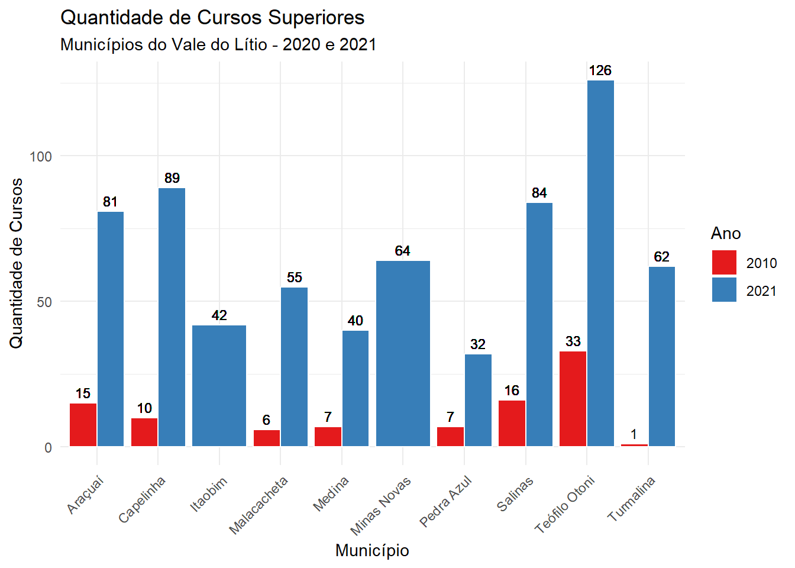

7 Equipamentos de saúde e educação
7.1 Qual a situação desses municípios em termos de equipamentos de saúde e educação?
Usando os dados do Cadastro Nacional de Estabelecimentos de Saúde (CNES) foi possível verificar o aumento dos estabelecimentos entre os anos de 2010 e 2022. Ressalta-se que nesse total incluem-se hospitais, tanto públicos quanto privados, hospitais gerais e especializados, além de clínicas e consultórios, unidades básicas de saúde, laboratórios, entre outros.
A figura a seguir ilustra a situação para cada um dos municípios analisados. Nesta medida, destaca-se Teófilo Otoni, que passou de 319 para 499 estabelecimentos de saúde cadastrados em 2022, um aumento de 56% em 12 anos.
Fonte: Ministério da Saúde. Elaboração: FJP/Diretoria de Estatística e Informações.
Em termos dos leitos em cada um dos municípios, novamente Teófilo Otoni foi o destaque, com o maior número total de leitos, somando 352, com uma distribuição significativa em todas as categorias (especialmente em leitos cirúrgicos com 160 unidades).
Os municípios do Grupo 2 mostraram uma quantidade moderada de leitos, com Salinas possuindo o maior total do grupo, com 89 leitos. O Grupo 3 tem números mais reduzidos, sendo Itaobim o que apresenta o maior total, com 49 leitos. Por fim, o Grupo 4 tem uma situação particularmente crítica em termos de leitos hospitalares, com Coronel Murta e Itinga não apresentando leitos em nenhuma categoria, e Rubelita tendo apenas três leitos classificados como "Outros Leitos". Virgem da Lapa possui 23 leitos, todos concentrados nas categorias de leitos clínicos e cirúrgicos. A tabela sugere diferenças significativas na capacidade hospitalar entre os municípios.
| Quantidade Leitos Hospitalares | ||||
| Municípios do Vale do Lítio - 2022 | ||||
| Municipio | Leito Clínico | Leito Cirúrgico | Outros Leitos | Total |
|---|---|---|---|---|
| Grupo 1 | ||||
| Teófilo Otoni | 121 | 160 | 71 | 352 |
| Grupo 2 | ||||
| Araçuaí | 39 | 18 | 28 | 85 |
| Capelinha | 20 | 7 | 27 | 54 |
| Salinas | 51 | 23 | 15 | 89 |
| Grupo 3 | ||||
| Itaobim | 26 | 14 | 9 | 49 |
| Malacacheta | 16 | 6 | 12 | 34 |
| Medina | 27 | 8 | 4 | 39 |
| Minas Novas | 29 | 7 | 16 | 52 |
| Pedra Azul | 32 | 11 | 1 | 44 |
| Turmalina | 31 | 5 | 6 | 42 |
| Grupo 4 | ||||
| Coronel Murta | 0 | 0 | 6 | 6 |
| Itinga | 0 | 0 | 0 | 0 |
| Rubelita | 0 | 0 | 3 | 3 |
| Virgem da Lapa | 19 | 4 | 0 | 23 |
No que se refere à formação de capital humano nos municípios do Vale do Lítio, optou-se pela análise do ensino superior, tendo em vista o potencial de demanda de mão-de-obra qualificada. Como se sabe, a produção de veículos elétricos ou mesmo de baterias para estes são atividades que exigem não só matérias-primas como o lítio, mas também mão-de-obra que atendam alguns requisitos mínimos que vão desde o conhecimento de várias línguas até o conhecimento dos diversos processos, por exemplo, envolvidos na reciclagem de baterias.
Com os dados do Censo da Educação Superior, é possível verificar a quantidade de cursos superiores ofertados (10 dos 14 municípios possuem oferta de ensino superior) e sua variação entre 2010 e 2021. Via de regra, todos os municípios apresentaram aumento no número de cursos superiores.

Fonte: INEP. Elaboração: FJP/Diretoria de Estatística e Informações.
Quando se analisa o grau acadêmico, a maioria oferta é de cursos tecnológicos e, a depender do município, a licenciatura vem em segundo lugar. Além disso, embora as informações sobre os cursos sejam precárias em termos do quantitativo de vagas e inscritos, percebe-se que apenas em um município há oferta de curso de engenharia, no caso, a engenharia civil.
Outros cursos ofertados incluem: matemática, física, química, ciências contábeis, engenharia de alimentos, administração (presencial e à distância), administração pública, artes visuais, pedagogia, educação física, artes, análise e desenvolvimento de sistemas, engenharia agrícola e ambiental, pedagogia, história, direito, letras e gestão ambiental. Não é difícil perceber que a adequação da formação de capital humano para as possíveis atividades no Vale do Lítio necessita de uma atenção especial, seja por meio do suporte de universidades públicas estaduais ou privadas.

Fonte: INEP. Elaboração: FJP/Diretoria de Estatística e Informações.